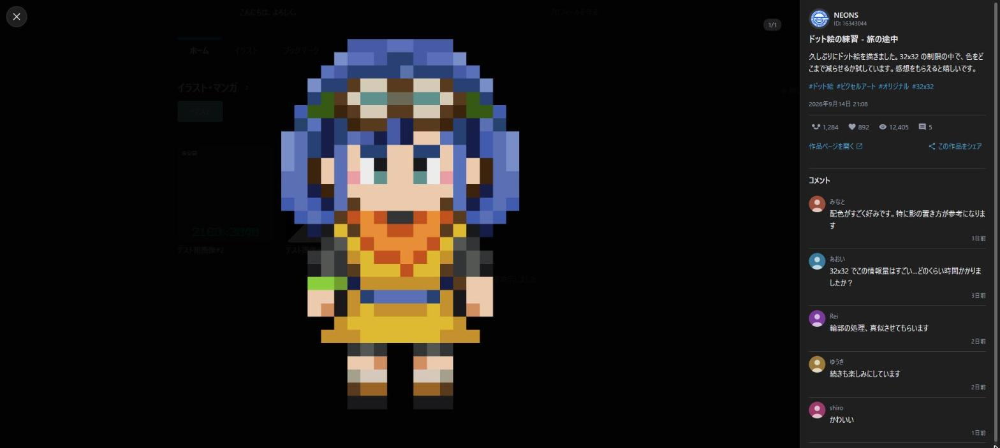
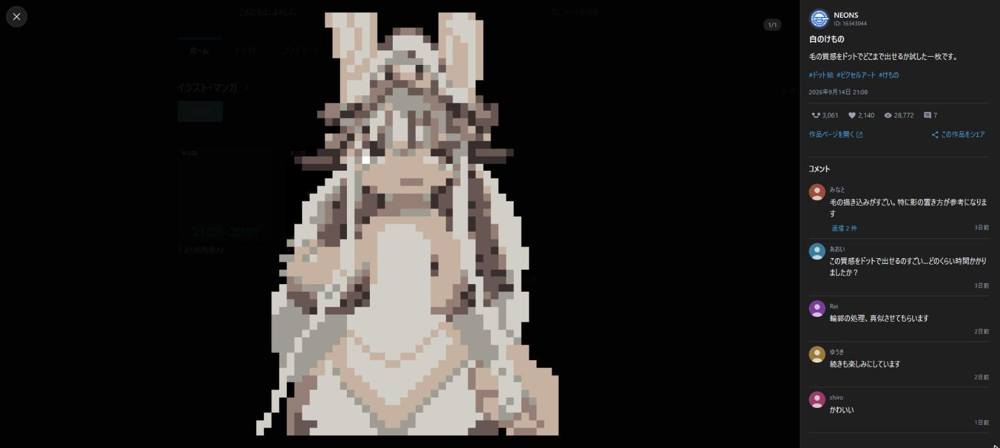
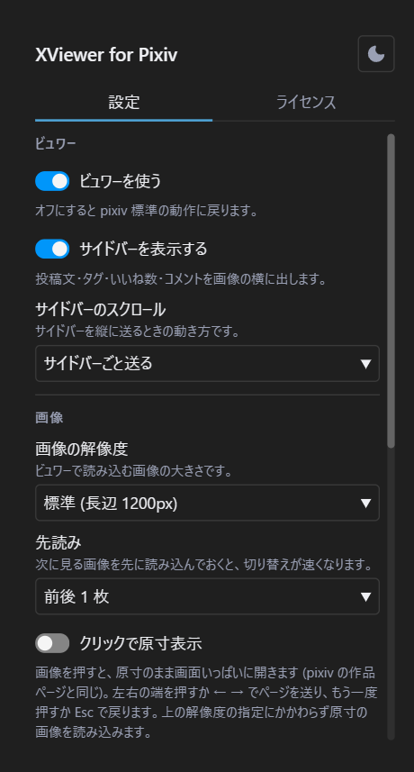

Chrome / Brave / Edge 対応
pixiv を、X のように見る。
ユーザーページで作品をクリックすると、ページ遷移せずにその場でモーダルが開きます。 複数枚の切り替え、うごイラの再生、投稿文やコメントの閲覧、いいねやブックマークまで、すべてモーダルの中で完結します。 閉じれば、元のグリッドの元のスクロール位置に戻ります。
現在ストアの審査を待っています。公開され次第このボタンから入手できるようになります。

グリッドから指を離さずに、最後まで見る
作品を開くたびにページが切り替わり、戻るたびにスクロール位置を見失う。その往復をなくすための拡張機能です。
モーダルで開く
グリッドのクリックを受け取り、ページ遷移せずに表示します。URL は作品ページのものへ差し替わるので、リロードも共有もできます。
複数枚の切り替え
左右キーと画面端の矢印でページ送り。前後の画像を先読みするので、切り替えに待ち時間がありません。
作品から作品へ
上下キーでグリッドの前後の作品へ移動します。端まで来たら次のページ分を自動で読み足します。
うごイラの再生
zip を展開してフレームを組み立て、その場で再生します。一時停止にも対応しています。
原寸表示
画像をクリックすると、原寸のまま画面いっぱいに開きます。細部を確かめたいときのための機能です。
コメントの閲覧
スタンプと絵文字を画像で表示します。返信の展開や続きの読み込みにも対応しています。
いいねとブックマーク
フォローとシェアも含めて、モーダルの中から操作できます。自分の作品には表示しません。
ダークとライト
ビュワーの配色は pixiv 本体の設定に追従します。設定を二重に持たせません。
投稿文もコメントも、画像の横に
サイドバーには投稿文、タグ、投稿日、いいね数、ブックマーク数、閲覧数、作者のアイコンとフォローボタンが並びます。 コメントはスタンプと絵文字を画像のまま描画し、返信もその場で開けます。
- サイドバーごと送るか、コメントだけ送るかを選べます
- 読み込みに失敗しても、再試行から続きを読めます
- サイドバーを消して、画像だけを見ることもできます

一覧を、途切れさせない
イラストやマンガの一覧のページャーを、下に続けて読み込む形にできます。 URL のページ番号は画面に出ているページへ追従するので、リロードしても同じあたりへ戻れます。
- 下まで来たら読み込む / 常に 1 ページ先を読んでおく、から選べます
- プロフィールのピックアップ欄を隠して、作品一覧をすぐ目に入れられます
設定は、その場で反映される
ツールバーのアイコンから開きます。保存ボタンはありません。変更した瞬間に保存され、開いているページにもすぐ反映されます。
- 画質や先読みの設定は、開いている作品にもその場で効きます
- ビュワー自体をオフにすれば、pixiv 標準の動作に戻ります

設定でできること
すべてツールバーのポップアップから変更できます。設定は Chrome の同期領域に保存され、外部には送信されません。
| 区分 | 項目 | 既定 | 効果 |
|---|---|---|---|
| ビュワー | ビュワーを使う | オン | オフにすると pixiv 標準の動作に戻ります |
| ビュワー | サイドバーを表示する | オン | 投稿文、タグ、いいね数、コメントを画像の横に出します |
| ビュワー | サイドバーのスクロール | サイドバーごと | 投稿文からコメントまでを 1 つにつなげて送るか、投稿文を固定してコメントだけを送るか |
| 画像 | 画像の解像度 | 標準 | 原寸を選ぶと鮮明になりますが、読み込みは重くなります |
| 画像 | 先読み | 前後 1 枚 | 次のページを先に読み込んでおく枚数を選べます |
| 画像 | クリックで原寸表示 | オフ | 画像を押すと、原寸のまま画面いっぱいに開きます |
| ユーザーページ | ピックアップ欄を隠す | オフ | プロフィールのホームに出るピックアップ欄を隠します |
| ユーザーページ | 無限スクロール | 使わない | 下まで来たら読み込む / 常に 1 ページ先を読んでおく、から選べます |
| 操作 | 背景クリックで閉じる | オン | 画像の外側をクリックしたときに閉じるかどうか |
| 操作 | グリッドの Tab 移動 | 飛ばさない | グリッドで Tab を押したときに、ブックマークとタイトルをフォーカス順から外すか |
キー操作
動作環境
Manifest V3 に対応した Chromium 系ブラウザで動作します。
対応ブラウザ
Chrome、Brave、Edge などの Chromium 系ブラウザ。Chrome 120 以上が必要です。Firefox と Safari には対応していません。
対象ページ
https://www.pixiv.net/ のユーザーページ。他のサイトでは動作しません。
ライセンス
ソースコードは GitHub で公開しています。同梱している第三者の成果物の表示は、設定画面のライセンスタブにあります。
データは、どこにも送りません
この拡張機能はサーバーを持ちません。通信するのは、あなたが開いている pixiv とその画像 CDN だけです。
収集しないもの
閲覧履歴、作品 ID、ユーザー ID、Cookie、認証情報、個人情報。いずれも取得も保存も送信もしません。
保存するもの
あなたが選んだ 11 項目の設定だけ。Chrome の同期領域に置かれ、外部サーバーへは出ません。
要求する権限
storage と https://www.pixiv.net/* の 2 つだけ。他のサイトへのアクセス権限は求めません。
これは非公式の拡張機能です。
pixiv プラットフォームを利用して開発したもので、ピクシブ株式会社が作成・配布しているアプリケーションではありません。 同社とは一切関係がなく、提携・支援・推奨を受けたものでもありません。
- 利用は自己責任でお願いします。本拡張の利用によって生じた損害について、作者およびピクシブ株式会社は責任を負いません
- R-18 作品の表示は pixiv 側の設定に従います。拡張側で年齢制限を回避することはしません
- pixiv の仕様変更によって動作しなくなる場合があります